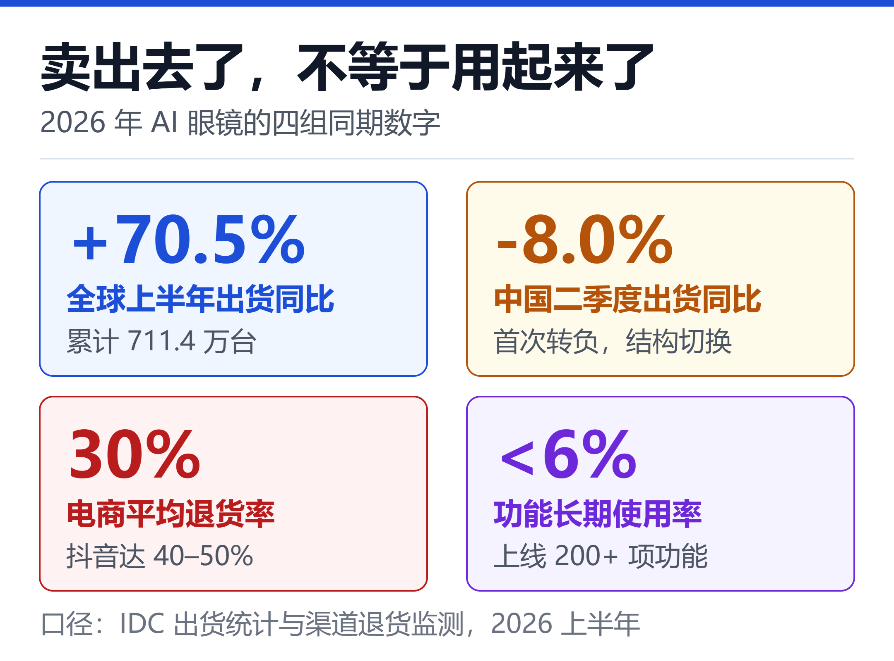
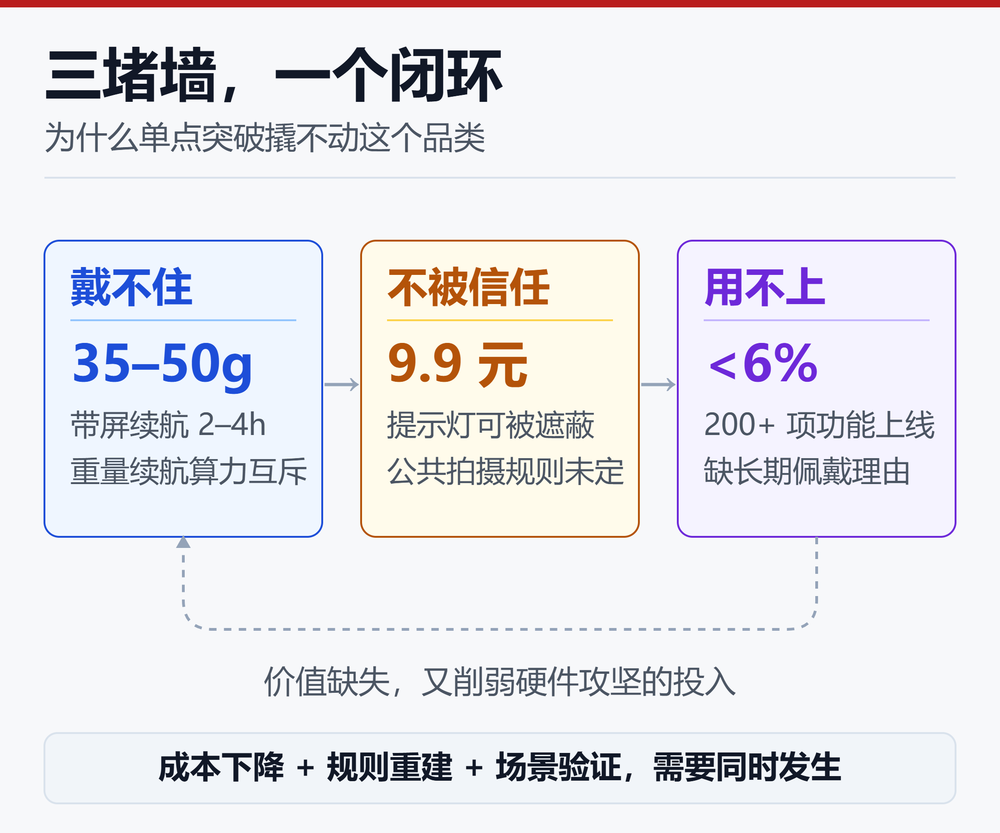

AI眼镜出货涨七成、退货率超三成：千万台狂欢下的三堵墙
2026 年上半年，全球智能眼镜累计出货 711.4 万台，同比增长 70.5%。同期，主流电商平台的 AI 眼镜平均退货率约为 30%，以直播带货为主的渠道达到 40% 至 50%。
还有一组更刺眼的数字：过去两年，行业在眼镜上累计上线超过 200 项 AI 功能，用户长期使用率却不足 6%。雷鸟创新 CEO 李宏伟在 2026 年 5 月的发布会上把这个数字公开说了出来。
把三组数字放在一起，才是 2026 年 AI 眼镜的完整切面。品类确实跨过了千万台量级，但跨过的是出货门槛，不是日常佩戴门槛。资本、供应链和政策都到位了，唯独"为什么每天要戴它"这个问题还没被回答。
一、千万台量级落地，但增长不在同一条线上
先看最硬的一手数据。IDC《全球智能眼镜市场季度跟踪报告》显示，2026 年第二季度全球智能眼镜出货 354.7 万台，同比增长 35.3%；上半年累计 711.4 万台，同比增长 70.5%。
拆开看，增长并不均匀：
| 品类 | Q2 出货 | 同比 |
|---|---|---|
| 音频及拍摄眼镜 | 249.4 万台 | +54% |
| AR/ER 眼镜 | 50.5 万台 | +75.7% |
| VR/MR 头显 | 54.8 万台 | -23.3% |
眼镜形态在涨，头显在跌。这不是同一条增长曲线，而是预算和注意力从"沉浸式设备"向"日常可佩戴设备"的一次迁移。
需要说清的是口径。同样被叫作"2026 年全球出货预测"的数字，从 1360 万台、1610 万台到 2000 万台都有。差别来自是否计入 VR 头显、是否包含白牌产品、统计的是出货还是零售、只算 AI 眼镜还是全部智能眼镜。
这些数字不可直接比较。能够确认的只有一件事：千万台量级已经成立，具体落在哪个区间仍存在分歧。
中国市场的信号更复杂。IDC 数据显示，2026 年二季度中国智能眼镜出货 61.1 万台，同比下滑 8.0%，是该市场首次出现负增长。
但同一季度，中国 AR/VR 市场出货 27.9 万台，同比增长 85.8%；AR 与 ER 眼镜增速达 123.0%，单色显示眼镜份额首次超过全彩，达到 51.2%。拖累总量的是音频眼镜：出货 33.2 万台，同比下滑 35.4%。
也就是说，下滑的是同质化最严重、价格最低的那一档，上涨的是带轻量显示和端侧 AI 的那一档。这是结构切换，不是需求消失。
零售端能印证这个判断。洛图科技全渠道数据显示，2026 年上半年中国智能眼镜零售 90.9 万台，同比增长 85.5%；零售额 18.8 亿元，同比增长 98.7%。销额增速跑赢销量增速 13 个百分点，说明均价在往上走，消费者愿意为更好的配置付钱。
不过热度并不稳定。洛图监测的 2026 年 7 月线上零售为 7.4 万台，同比下滑 15.3%，环比下滑 20.9%。
政策也在其中起了作用：2026 年智能眼镜首次被纳入数码产品购新补贴，按售价 15% 补贴、单件上限 500 元、单价不超过 6000 元。
补贴降低的是"第一次买"的门槛。尝鲜需求被提前释放之后，回落几乎是必然。

图中把四条同期的量级放在一起：出货增速向上，中国二季度转负，退货率与长期使用率则停在不利的一侧。核心结论是，这个品类的"卖出去了"和"被用起来了"已经分叉成两条独立曲线，单看任何一条都会误判。
二、一超多强：Meta 定义品类，中国承接供应链
全球格局是典型的一超多强。IDC 口径下，Meta 在 2026 年二季度占全球智能眼镜出货的 68.7%；Counterpoint 聚焦无显示 AI 眼镜这一细分，给出的份额约为 94%。两个数字不矛盾，只是分母不同。
Ray-Ban Meta 与 Oakley Meta 系列在 2025 年销量超过 700 万副，而 2023 至 2024 两年累计约 200 万副。一年卖出此前总和的三倍多，这是 AI 眼镜第一次证明自己不是极客玩具。
依视路陆逊梯卡在 2026 年 10 月 20 日的三季报里首次单独披露了穿戴设备业务：单季营收 4.86 亿欧元，按固定汇率增长 20%，约占集团营收 6.5%；前九个月累计 12.6 亿欧元，增长 79%。约三分之一的智能眼镜在售出时配了处方镜片。
增长 20% 值得留意，因为二季度这个数字接近翻倍。财报发布次日股价上涨 15.5%，创 2008 年以来最大单日涨幅，但年内仍下跌超过 35%，市值较一年前的峰值近乎腰斩。市场担心的不是眼镜卖不动，而是增速换挡、隐私争议，以及 Google 与三星入局后的竞争。
还有一个容易被忽略的结构：联名模式下，硬件制造与终端销售主要由眼镜集团承担，产品卖爆并不等价于科技公司的硬件收入同步放大。这解释了为什么一个增长最快的消费电子品类，在财报上仍然只是几个百分点。
中国侧的优势集中在制造和渠道。全球超过 80% 的 AI 眼镜制造环节集中在中国，从光学镜片、微显示到整机代工形成密集的本地网络，新项目从立项到量产可以压缩到一个半月。
品牌端则是混战。洛图统计的 2026 年上半年线上销量份额为：雷鸟 18.9%、Rokid 16.7%、千问 8.6%、华为 8.2%，前四合计从一季度的 56% 降到二季度的 53%。集中度不升反降，说明格局远未固化。
真正难复制的不是组装能力，而是验光配镜。约三分之一用户需要处方镜片，线下验配、镜片适配和售后难以完全线上化。这恰好是传统眼镜渠道的价值，也是中国厂商与互联网大厂组合后的结构性优势。
三、资本先到，盈利还在路上
2026 年被业内叫作"AI 眼镜 IPO 元年"，不是因为利润，而是因为融资密度。
洛图科技不完全统计显示，2026 年上半年全球智能眼镜产业链融资、并购与战略投资至少 64 起，披露总金额约 90 亿元；而 2025 年全年约 36 起、估算 43.67 亿元。半年超过全年，且单轮金额被抬到 10 亿元级别。
头部玩家的动作可以列一串：雷鸟创新 1 月完成超 10 亿元 C 轮，中国移动、中国联通参与；XREAL 1 月完成 4.6 亿元 D 轮，4 月向港交所递交招股书；影目科技 9 月完成近 10 亿元 C+ 轮；逸文科技 7 月完成 1.5 亿美元 Pre-B 轮，成立不到三年估值跨过 10 亿美元。
大厂押注的逻辑同样直接。眼镜被视作可能承接下一代个人计算入口的形态，一旦成立，对应的是每年十亿部量级的终端市场。阿里把千问眼镜升级为智能体眼镜并计划出海，小米、华为、科大讯飞、百度小度相继入场，连理想汽车也把眼镜定位为车载空间穿戴设备。
但财务面并不轻松。XREAL 招股书显示，2025 年营收 5.16 亿元、同比增长 31%，海外收入占比超过 70%，毛利率从 18.8% 提升到 35.2%；同期三年累计净亏损超过 20 亿元，2025 年经调整净亏损仍约 2.5 亿元。Rokid、雷鸟、影目均未公开披露完整营收与利润数据。
这里需要把两件事分开：资本定价的是"入口期权"，不是当期利润；亏损主要来自研发投入、光学良率爬坡和渠道建设，属于品类早期的正常形态。但这也意味着，一旦补贴退坡或出货不及预期，现金流的容错空间并不大。
政策与标准正在同步补齐。2026 年 8 月 27 日，GB/Z 177.6—2026《人工智能 终端智能化分级 第 6 部分：眼镜》正式发布，把 AI 音频眼镜、AI 拍摄眼镜和 AI+AR 眼镜纳入同一套分级框架。
标准按感知、认知、执行、记忆等能力划分为 L1 响应级、L2 工具级和 L3 辅助级。它解决的是"怎么判定智能水平"，不等于隐私合规标准，但给了行业一把统一的尺子。
四、三堵墙：出货涨七成，退货超三成
第一堵：戴不住的物理上限
普通光学眼镜重量约 15 至 25 克，主流 AI 眼镜普遍在 35 至 50 克，部分带全彩显示的机型超过 70 克。多出来的二十几克压在鼻梁和太阳穴上，短时间无感，戴一整天就是另一回事。
续航同样受限。带屏产品在显示模组常驻时单次续航通常只有 2 至 4 小时，无屏产品可以到 8 小时以上。加大电池会增加重量，提高亮度会增加功耗和发热，加强端侧算力又要再加电池——重量、续航、算力构成一个暂时无解的不可能三角。
行业的应对是双芯双系统：一颗低功耗 MCU 常驻处理唤醒、传感和基础交互，一颗高性能 SoC 或 NPU 按需启动跑 AI 推理。部分方案还引入 ISP 分担影像处理。这类异构架构能把功耗压下来，但属于工程优化，不改变电池能量密度和光学效率的物理上限。
第二堵：拍得到，也拍出了不信任
AI 眼镜最有价值的能力来自那枚前置摄像头：实时翻译要看见菜单，导航要读懂路标，视觉问答要识别眼前的东西。抽掉摄像头，多数卖点同时失效。
问题也正出在这里。设备走到哪里，就相当于一枚持续在线的摄像头走到哪里。主流做法是在镜框加一颗白色 LED 灯，拍摄时闪烁、录像时常亮；但这条防线很薄，一张几元钱的遮光贴就能让它失效。
公共场所、学校、医院和涉密场所对带摄像眼镜的限制正在增加，各国对人脸识别、录音同意和数据跨境的规则也不一致。
这不是靠一次固件升级能解决的问题。它需要重新界定公共空间里的拍摄权、数据归属和知情同意边界，而规则重建的速度远慢于硬件迭代。对企业来说，物理摄像头开关、端侧处理、自动删除和更醒目的录制提示，会比参数表上的像素数更影响能否进得去 B 端场景。
第三堵：200 个功能，6% 的留存
行业上线了超过 200 项 AI 功能，长期使用率不足 6%。多数用户停留在问天气、问时间、问新闻这类基础操作上，剩下的功能在新鲜感过去后再没被打开。
渠道数据印证了这一点。XR Vision 监测显示，主流电商 AI 眼镜平均退货率约 30%，抖音渠道达到 40% 至 50%；广东省消委会 2025 年下半年的比较试验中，15 款样品里有 13 款配套应用存在易被篡改和二次打包的漏洞。
用户吐槽高度集中：太重、续航短、夹鼻梁、翻译出国才用得上、拍了一周就没新鲜感。到目前为止，实时翻译是唯一被反复验证的高频刚需，出境游场景把翻译、导览、找路叠在一起，恰好都发生在双手不便、掏手机尴尬的时刻。导航、提词、支付仍在逐个试。

图中三堵墙不是并列关系，而是通过箭头首尾相连：戴不住强化隐私焦虑，隐私焦虑压缩可用场景，场景缺失让用户找不到长期佩戴的价值，价值缺失又削弱厂商投入硬件攻坚的动力。核心结论是，单点突破任何一堵墙都不足以撬动品类，需要成本、规则与场景同时松动。
这三堵墙还会彼此加固，形成一个闭环。这也是为什么"再堆十个功能"很难改变留存曲线：功能增加会推高功耗，功耗恶化佩戴体验，体验差又降低用户容忍隐私风险的意愿。2026 年被一些厂商称为"减法元年"，本质上是承认了这个反馈回路的存在。
五、下一站：成本、形态与入口
成本曲线决定价格带
带显示产品的成本压力主要在光学。拆解资料显示，MicroLED 光机、衍射光波导镜片与结构件分别约占物料成本的 30%、25% 和 15%，芯片与光学合计超过七成。
国泰海通证券测算，随着光波导良率提升和规模化铺开，带显示 AI 眼镜的整机物料成本有望从 2025 年的约 315 美元降至 2030 年的 150 美元附近。IDC 则预计智能眼镜平均售价从 2026 年约 376 美元降到 2030 年约 229 美元。
价格带下探才是"iPhone 时刻"在成本端的真实含义。券商与厂商普遍把 2027 至 2028 年标记为候选节点，招商证券、雷鸟创新的判断都指向这个区间。这属于预测而非事实，能否兑现取决于光学良率、芯片国产化和出货规模三者是否同时到位。
长期空间的分歧同样值得警惕：
| 机构口径 | 2030 年出货 | 年复合增速 |
|---|---|---|
| Wellsenn XR | 9000 万台 | 约 60% |
| IDC 无显示专项 | 2730 万台 | 18.9% |
同一年份相差三倍多，说明连长期预测都还没收敛。把任何一条曲线当成确定性事实，都不够稳妥。
形态从加减法回到减法
Counterpoint 数据显示，2026 年上半年无屏产品占全球 AI 眼镜出货约 96%，带屏的 AR+AI 眼镜只占 4%，但后者同比增长 449%。基数小、增速高，是典型的路线切换前夜。
光学方案也在换挡：波导方案份额从 18% 升到 42%，Birdbath 相应回落；显示从单目单色提示，向双目全彩逐级演进。国内 10 月密集发布的新品里，Rokid、雷鸟、千问不约而同把全彩和端侧大模型作为卖点。
有意思的是，产品趋同也被公开讨论。有行业观察认为，多数品牌依托成熟供应链方案快速出货，内部结构差异很小，差别主要在外观和软件调校。当硬件配置拉不开差距，竞争就会回到"戴得住"和"用得上"这两个更朴素的问题上。
入口之争还没有定论
Meta 在 2026 年 Connect 上把产品线铺成矩阵，从无摄像头的音频款到 799 美元的带显示款，扎克伯格给出的判断是"未来所有眼镜都会变成 AI 眼镜"，并把个人智能体作为眼镜的长期形态。
国内大厂给出的答案彼此不同：阿里把眼镜升级为智能体入口并向海外生态适配，腾讯押注长期记忆，字节的第一代方案因与市面产品趋同而转向极致轻量。路线分散，恰恰说明品类定义权还没落定。
新玩家还在路上。Google 与三星基于 Android XR、搭载 Gemini 的眼镜定在 2026 年秋季推出，镜框由 Warby Parker 与 Gentle Monster 设计。
XREAL 的 Android XR 显示眼镜计划 11 月中出货，Snap Specs 定价 2195 美元。
苹果的首款眼镜被报道为无显示形态、可能在 2027 年亮相，官方尚未确认任何信息。
B 端先跑通，C 端等刚需
央视网在讨论这个品类时给出一个务实的判断：工业巡检、医疗辅助、远程协作、文旅导览、教育培训等专业场景，可能比大众消费市场更早形成商业闭环。这些场景有明确付费方、有可量化的效率收益，也更容易约定摄像头的使用边界。
消费端要等的不是更强的模型，而是一个不需要解释就能理解的使用理由。翻译已经证明这类理由长什么样：高频、即时、手机做起来别扭。找到第二个、第三个这样的场景，比多上一百个功能更重要。
商业模式也在往后端延伸。付费 AI 能力、企业订阅、处方镜片与验配服务，都在把一次性硬件收入变成长周期收入。硬件毛利被价格战压薄之后，这层收入决定了厂商有没有钱继续投光学和端侧芯片。
六、不同角色该怎么看
对普通消费者，判断标准可以很简单：有明确的翻译、提词或导航刚需，且能接受当前重量与续航，那么 15% 的购新补贴是实打实的优惠；只是被发布会打动，建议等两个信号——重量与续航出现可感知的改善，以及带显示产品进入 2000 元以内。
选购时还有一条容易被忽略的：近视、散光用户要提前确认处方镜片方案和验配渠道。约三分之一用户需要配镜，这一项对全天佩戴舒适度的影响，往往比参数表上的算力更大。
对从业者，优先级建议从场景倒推。B 端项目先把摄像头权限、数据留存和现场规则写进合同；C 端产品优先做减法和佩戴优化；隐私能力按设计内建，而不是等标准落地后补。国标给出的 L1 至 L3 分级，可以用来定位产品能力，但不能替代合规评估。
对关注产业的人，需要注意三件事：统计口径不统一，同比数字不能跨机构比较；国补拉动的首购需求存在透支效应，季度波动要放在全年看；头部厂商对单一大客户和单一光学方案依赖较高。
价格战与补贴退坡是现实风险。国泰海通在研报里把这些列为行业主要风险，判断值得保留。
小结
2026 年不是 AI 眼镜的爆发元年，而是从"尝鲜"走向"常用"之间最难的一年。出货曲线、资本曲线和政策曲线都向上，留存曲线却还横在原地。
决定这个品类能不能跨过去的，不是又上线了多少功能，而是三件更基础的事：戴得住、用得上、被允许。硬件不可能三角、公共空间的隐私信任、用户认知里的需求缺口，任何一堵墙单独都撬不动，但它们正在被成本下降、标准落地和巨头入场同时松动。
千万台只是入场券。真正的分水岭，出现在有人能说清"为什么明天还要戴它"的那一天。
免责声明
本文基于公开市场数据、厂商财报、行业研报与媒体报道撰写。不同研究机构对品类的统计口径存在差异，文中数据已尽量标注来源与时点，但不保证跨口径可比。
产品定价、发布时间、份额与预测可能随市场变化调整，请以官方公告和原始报告为准。文中关于趋势、场景与选购取舍的内容属于行业分析，不构成投资、采购或合规建议。
参考来源
- IDC —— 全球智能眼镜增长35.3%，中国首现负增长，市场分化加速
- 通信世界网 —— IDC：2026年Q2全球智能眼镜增长35.3%，中国首现负增长
- 中国电子技术标准化研究院 —— AI眼镜智能化分级国家标准化文件正式发布
- 全国标准信息公共服务平台 —— GB/Z 177.6-2026 标准信息
- 新浪财经 —— 国泰海通证券：AI眼镜商业化提速，产业链迎成长机遇
- 腾讯网 —— 端侧AI爆发前夜，巨头们把赌注押在智能眼镜上
- 界面新闻 —— 隐私争议、体验瓶颈、商业化迷途，AI眼镜还没走出尝鲜怪圈？
- 澎湃新闻 —— 2026WAIC观察：AI眼镜苦等百镜大战
- 人民数据 —— 看上去很美的AI眼镜，在优化用户体验的路上
- 界面新闻 —— 这个国庆，AI眼镜找到了真正的用武之地
- 央视网产业+ —— 从爆款到必需品，智能眼镜还要迈过几道坎
- 钛媒体 —— 资本抢投、大厂押注，AI眼镜最大赢家是售价50的华强北？
- OFweek可穿戴设备网 —— AR眼镜：四龙凑齐，流血上市
- Oninvest —— Ray-Ban 母公司三季报与智能眼镜增速换挡
- BigGo财经 —— AI眼镜热销难掩获利困局，科技巨头角力下一代入口定义权
- 新浪 —— 又是一轮爆发元年？智能眼镜站在变革或泡沫的十字路口
- MetaverseWatcher —— 2026至2027智能眼镜发布计划与定价追踪
相关阅读
- 看懂个人 Agent 入口之争：云端分身、系统接管、生态闭环三条路线怎么选
- 物理AI是什么：从世界模型到人形机器人，一文看懂AI下一个40万亿美元赛道
- 企业AI Agent部署实战：从0到1600个Agent的落地路径
推荐搭配装备
善其事，利其器。以下硬件能最大化你的AI体验👇
🔗 通过以上链接购买可支持本站持续运营 🙏